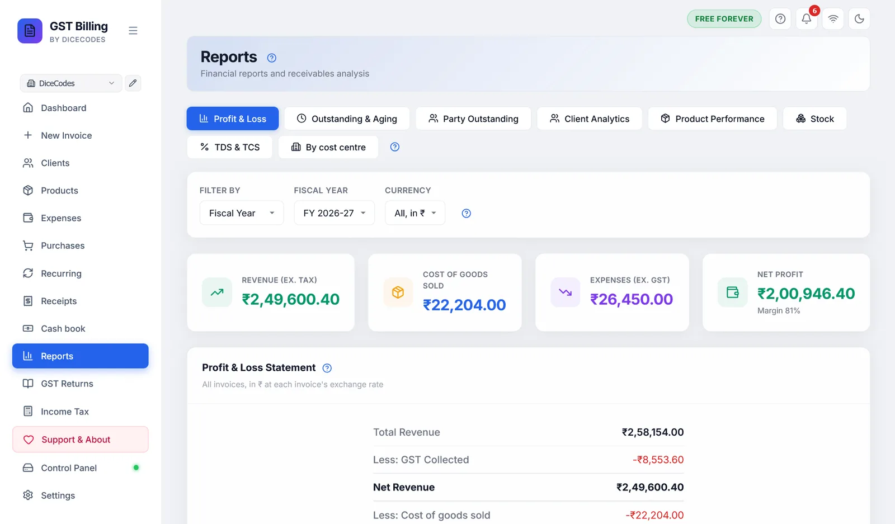
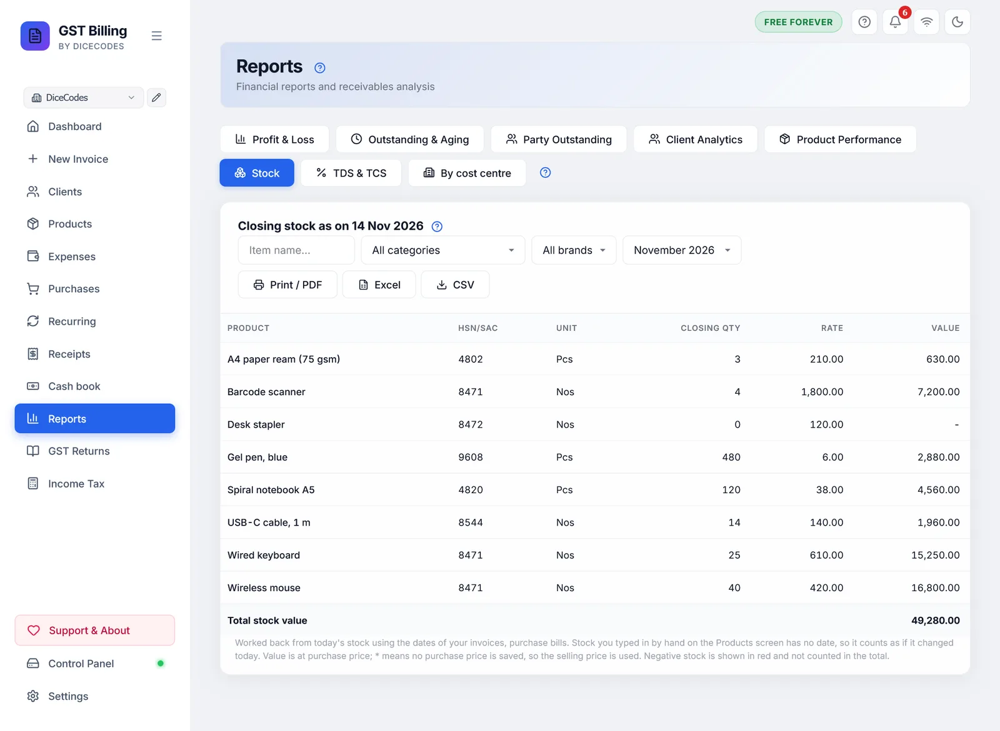
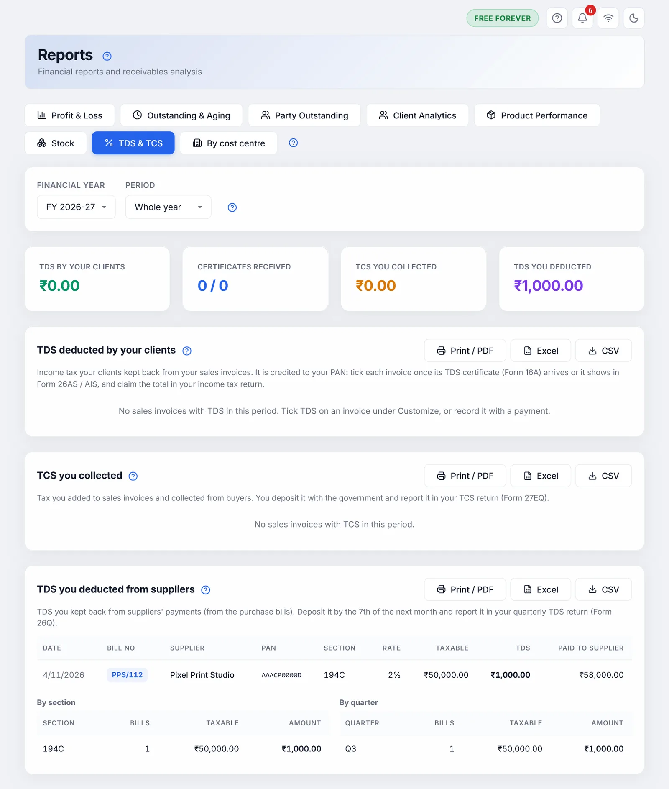

Reports
Profit and loss, who owes you and for how long, party outstanding by month, your best clients, your best-selling products, closing stock with its value, TDS and TCS, and profit by branch or project. Every report prints and downloads as Excel or CSV.
#The report tabs
Open Reports from the sidebar. A row of buttons at the top picks the report; the one you are on is filled in blue. The small ? at the end of that row opens the part of this guide for the report you are looking at.
| Tab | What it answers | Period |
|---|---|---|
| Profit & Loss | Did I make money? Sales minus expenses, without GST, and month by month. | The period you choose |
| Outstanding & Aging | Who owes me money today, on which invoice, and how late is it? | Every unpaid invoice, any date |
| Party Outstanding | The same money owed, one row per party and one column per month, the way Tally shows it. | A financial or calendar year |
| Client Analytics | Who are my best customers, and who pays slowest? | The period you choose |
| Product Performance | What sells most, by money and by quantity? | The period you choose |
| Stock | How much of each product did I have at the end of a month, and what was it worth? | The month you choose |
| TDS & TCS | Which clients deducted TDS from my sales, have their certificates come, what TCS did I collect, and what TDS did I deduct from suppliers? | A financial year, a quarter or your own dates |
| By cost centre | What did each branch, site or project sell, spend and earn? Shows only when cost centres are turned on. | The period you choose |
Reports always open on Profit & Loss. Which tab you were on is not remembered after you leave the screen.
#What the reports include
The sales tabs cover the business selected at the top of the sidebar, and count only real sales, as the Dashboard does:
- Counted: tax invoices, bills of supply and composition bills.
- Subtracted: credit notes (goods returned or a discount given after the sale) reduce the sales of the period they are dated in.
- Left out: proforma invoices and estimates (a quote is not a sale), delivery challans (goods moved, not sold) and cancelled invoices.
Purchase bills are not part of these reports, except By cost centre; they are in Income Tax, ITR Summary and the purchase register. Expenses are counted in Profit & Loss and By cost centre.
Two exceptions to "this business only":
- Stock covers every business, because products and stock are shared by all your businesses.
- To see another business's reports, switch business at the top of the sidebar (see More than one business).
GST you charge on a sale is not your money: you collect it for the government. GST you pay on purchases and expenses usually comes back as input tax credit (ITC). So Profit & Loss, Product Performance and By cost centre show amounts without GST. Client Analytics and the outstanding reports show the full invoice amount with GST, because that is what the customer owes you. See the glossary for GST words.
#Choosing the period and currency
Profit & Loss, Client Analytics, Product Performance and By cost centre share one period box at the top. Change it on one tab and the others follow. (Outstanding & Aging, Party Outstanding and Stock have their own choices, described in their sections.)
| Box | What it does |
|---|---|
| Filter By | Fiscal Year (1 April to 31 March) or Month / Year (one calendar month). |
| Fiscal Year | Shows with Fiscal Year. The current financial year and the four before it, such as FY 2026-27. It starts on the current one. |
| Month and Year | Show with Month / Year. Any month of this year or the five years before. They start on the current month. |
| Currency | Shows only when invoices in the period are in more than one currency, for example rupees and US dollars for export. Different currencies are never added together; pick one and the tab shows only invoices (and expenses) in it. |
The small ? at the end of this box opens this section.
A figure looks too small or is zero: check the period (a month you have not billed in shows nothing), the business at the top of the sidebar, and the currency. An invoice dated 31 March belongs to the financial year that ends that day, not the next one.
If you bill in more than one currency, the Currency list starts with All, in ₹ (the default): every invoice is counted, a foreign-currency one in rupees at the exchange rate saved on it, so export income is in your profit and loss with your rupee expenses. Pick one currency to see only its invoices, in that currency. Invoices with no exchange rate are left out of All, in ₹ and named above the statement, so you can add the rate.
#Printing and downloading a report
Every report table has three buttons at its top right:
| Button | What you get |
|---|---|
| Print / PDF | Opens the table alone in a new window, with its title and a line saying the business and period, and the print box opens. Choose your printer, or Save as PDF as the printer to keep a PDF. Wide reports (outstanding, party outstanding, cost centres) print landscape. |
| Excel | Downloads an .xlsx file. Amounts are real numbers, so Excel can total, sort and filter them. |
| CSV | The same table as a CSV file, for any spreadsheet, Tally import or your CA's software. |
They export what the screen shows: the period, currency and filters you chose, with a Total row where the screen has one. Files go to your browser's Downloads folder, named after the report and period, such as Profit-and-loss-FY_2026-27.xlsx.
The Expense statement and Purchase register have the same three buttons on their own screens.
"Nothing to export": the table is empty for that period; choose another period. "Allow pop-ups for this page to print the report": the browser blocked the print window; allow pop-ups for the app and click again (see Print does nothing). Excel shows odd characters in a CSV: use the Excel button instead.
#Profit & Loss
Did the business make money in the period? Choose the period in the box at the top (see Choosing the period). If you bill in more than one currency, a Currency choice appears, since different currencies are never added together.
Four cards at the top give the answer:
| Card | What it is |
|---|---|
| Revenue (ex. tax) | Your sales without GST (and without any TCS collected on the invoices). Credit notes are subtracted. |
| Cost of goods sold | What the goods you sold cost you: the quantity sold times each product's Purchase price (Products page). Goods returned on credit notes are taken back out. Services cost nothing here. |
| Expenses (ex. GST) | Your expenses without the GST on them. |
| Net Profit or Net Loss | Revenue minus cost of goods sold minus expenses. Green for a profit; red with a minus sign for a loss. Under it, the Margin: profit as a percentage of revenue (₹20,000 profit on ₹1,00,000 revenue is a 20% margin). |
Fill in the Purchase price of every product you sell, or the profit shows too high. A product sold with no purchase price counts as costing nothing, and the statement below names it so you can fill it in. Purchase bills themselves are not subtracted (the goods you bought and still hold are not a cost yet). Purchase prices are in your own currency (rupees for an Indian business). When the report is shown in another currency, each invoice's cost is converted at the exchange rate saved on that invoice ($1 = ₹84 turns ₹840 of goods into $10). An invoice with no exchange rate cannot be converted: its cost is left out, and a warning says how many there are.

The same period choice appears on the Client Analytics and Product Performance tabs.
#Profit & Loss Statement
The card below the four figures sets the sum out line by line, the way an accountant would:
| Line | Meaning |
|---|---|
| Total Revenue | Everything billed in the period, GST included, less credit notes. |
| Less: GST Collected | The GST (and TCS) on those invoices. It belongs to the government. |
| Net Revenue | What you actually earned from sales. |
| Less: Cost of goods sold | Quantity sold times the product's Purchase price, less goods returned on credit notes. A warning under it names the items sold with no purchase price. |
| Gross Profit | Net Revenue minus the cost of goods sold. |
| Total Expenses | Expenses with their GST. |
| Less: GST on Expenses (ITC) | The GST on those expenses, which comes back to you as input tax credit. |
| Net Expenses | What the expenses really cost you. |
| Net Profit / Net Loss | Gross Profit minus Net Expenses. |
With more than one currency, the card says Showing USD invoices only (or whichever currency you picked).
Profit looks too high: some products have no Purchase price (the warning under Cost of goods sold names them), or an invoice line was typed without picking the product and its name matches no product. An expense entered without its GST split counts in full. Revenue looks too low: check that the invoices are not saved as proforma or challans, and are not cancelled.
#Monthly Breakdown
One row for each month that had sales or expenses in the period, oldest first, with Revenue, Cost of goods sold, Expenses and Profit/Loss for that month, all without GST. A profit shows in green, a loss in red. Months with nothing in them are left out.
The card appears only when the period has some activity. Print / PDF, Excel and CSV export it with a Total row at the bottom.
- Pick the yearFilter By Fiscal Year, and the year.
- Read the monthsLook for months in red: those are the months you spent more than you sold.
- Send it to your CAClick Excel and email the file.
#Outstanding & Aging
Every unpaid or part-paid sales invoice, whatever its date, grouped by how late it is. Use it each week to decide whom to call first. The period box does not apply here: this is what is owed today.
Five cards at the top:
| Card | Money owed on invoices that are |
|---|---|
| Total Outstanding | All of them added up |
| Current (0-30d) | Not yet due, or up to 30 days past the due date (green) |
| 31-60 days | 31 to 60 days late (amber) |
| 61-90 days | 61 to 90 days late (purple) |
| 90+ days | More than 90 days late (red): the ones to chase first |
Days are counted from the invoice's due date; an invoice with no due date counts from its invoice date. If you have invoices in more than one currency, there is one row of cards for each currency, labelled INR, USD and so on.
What "outstanding" means: the invoice total, less any TDS your client deducted (they pay you the Net Receivable), less what they have paid so far. Invoices marked paid, and credit notes, estimates, challans and cancelled invoices are not listed.
Filter by client name... narrows the table and the five cards together. Type part of a name, such as "shar" for Sharma Traders; the × clears it.
#Outstanding Receivables
The table lists each unpaid invoice, the most overdue at the top:
| Column | Meaning |
|---|---|
| Client | Who owes it |
| Invoice No, Date, Due Date | Which invoice, and when it was due |
| Amount | The invoice total, with GST |
| Paid | What they paid so far (a dash if nothing) |
| Outstanding | What is still owed, in red |
| Days Overdue | Current if not late yet, otherwise the days late, such as 45d. Rows more than 30 days late are highlighted, and more than 90 days late even more strongly. |
Print / PDF, Excel and CSV export the list (landscape), with a Currency column and the date "unpaid as on" in the title line. Handy for a collection round or to send to a salesman.
- Find who to callRead the 90+ days card, then the red rows at the top of the table.
- Record the money when it comesRecord the payment on the Dashboard or make a receipt. The invoice drops off this list once it is fully paid.
An invoice the client has paid still shows: the payment was not recorded in the app. Record it on the Dashboard. "No outstanding receivables found." with money owed: check the business at the top of the sidebar, and clear the client filter. For one client's full account, see their ledger.
#Party Outstanding
The same money owed, laid out the way Tally does it: one row per party (client), A to Z, one column per month, a Total for each party on the right and a Total for each month at the bottom. Each unpaid amount sits in the month of its invoice, so you can see at a glance that, say, Mehta Traders still owes ₹12,000 from June and ₹8,500 from August.
The card is titled Party outstanding by month. Its boxes:
| Box | What it does |
|---|---|
| Financial year (Apr-Mar) / Calendar year (Jan-Dec) | Twelve columns from April to March (the default), or January to December. |
| Year | Which year: FY 2026-27 and the five before it, or 2026 and the five before it. |
| Currency | Shows only when you have invoices in more than one currency. |
- Bills from before that year that are still unpaid appear in an Earlier column at the start, so nothing owed drops out of the total. The column shows only when there is something in it.
- Invoices dated after the year you chose are not shown.
- The Party column and the Total column stay in place while you scroll sideways through the months.
- Print / PDF opens the table on its own page, landscape; choose your printer or Save as PDF. Excel and CSV download it.
Only sales count; estimates, challans and cancelled invoices are left out, and TDS the client deducted is taken off. Credit notes are not subtracted here (as on Outstanding & Aging).
"Nobody owes you anything for FY ..." while money is owed: the invoices may be from after that year (pick a later year) or in another currency (pick it in the currency box). The same customer shows twice: the client name is spelt differently on the invoices (capital letters and spaces at the start or end are ignored, other differences are not).
#What you owe suppliers
The same table the other way round. In the first box of the card, pick You owe suppliers (it starts on Clients owe you). The card is then titled Owed to suppliers by month: one row per supplier, A to Z, with what you still have to pay them in the month of their bill, an Earlier column for older unpaid bills, and totals.
- What is owed on a bill is its total, less TDS you keep back, less the payments recorded on it. A Paid bill is left out.
- A bill marked Paid before payments could be recorded owes nothing. A bill marked Partial then, with no payments recorded, shows its whole amount.
- Purchase bills are in rupees, so there is no currency box.
- Print / PDF, Excel and CSV save it, titled "Owed to suppliers".
"You owe no supplier anything for FY ..." while you do: the bills may be dated after that year, or marked Paid. The same supplier shows twice: their name is spelt differently on the bills.
#Client Analytics
Who buys the most, and who owes the most, in the period chosen at the top. Revenue here includes GST (it is what the client was billed), less their credit notes.
#Top clients by revenue
The ten clients who were billed the most in the period, highest first, with Revenue and the number of Invoices (credit notes are not counted as invoices). Use it to know whom to look after: a discount or a call to your best ten pays back the most.
"No client data for this period." means there were no sales in that period and currency.
#Highest outstanding (worst payers)
The ten clients who owe you the most on invoices from this period, with Outstanding and % Unpaid: what share of what they were billed is still unpaid. 80% unpaid is a customer to stop giving credit to. Outstanding is after any TDS they deducted.
"Everyone is up to date." means nobody owes anything on this period's invoices. For money owed from any date, see Outstanding & Aging.
#All clients breakdown
Every client billed in the period, the number in brackets being how many. Columns: Client, Invoices, Revenue, Paid, Outstanding (a dash if nothing), Last Invoice date. Highest revenue first. Print / PDF, Excel and CSV export it.
One customer appears on two rows: the name is typed differently on some invoices ("Sharma Traders" and "Sharma Traders Pvt Ltd"). Clients are grouped by the exact name on the invoice. To see one client's whole history, open their ledger.
#Product Performance
What you sold, by item, in the period chosen at the top. Revenue here is the line's taxable value: after line discounts and without GST, so it matches your invoices. Credit notes are subtracted (returned quantities come off too). Delivery charges and other charge lines are not a product and are left out. Items are grouped by the name on the invoice line. A line sold by the box counts in the product's own unit (2 boxes of 12 = 24).
#Filtering by item, category, brand or serial number
The boxes above the tables narrow every table on the tab: Item name (part of it), a category (with everything under it) and a brand. The category and brand lists appear once a product has one; lines that are not linked to a product drop out while either is chosen.
Serial no. / IMEI: type 3 characters or more. A card shows the purchase bill it was bought on (date, supplier, bill number), from the serial numbers written on purchase bill lines, and any invoice whose line names it (in the item name or description).
#Top revenue producers
The ten items that brought in the most money, with Revenue and Qty sold. Rest the mouse on a name to see its HSN code. "No product data for this period." means no sales in that period.
#Most units sold
The ten items sold in the largest quantity, with Qty sold and Txns (on how many invoice lines it appeared). A cheap item that sells in large numbers shows here even if it is not in the revenue top ten. Quantities of different units (kg, pieces, boxes) are not converted, so compare like with like.
#All products
Every item sold in the period, the number in brackets being how many, highest revenue first:
| Column | Meaning |
|---|---|
| Product | The item name as on the invoice |
| HSN | The HSN or SAC code (the GST code for the goods or service), from the first invoice line that has one |
| Qty sold | Total quantity, less returns |
| Revenue | Taxable value, without GST |
| Avg rate | Revenue ÷ quantity: the average price you really got |
| Txns | Number of invoice lines |
| Last sold | Date of the latest invoice with it |
Print / PDF, Excel and CSV export it.
The same item appears twice: it was typed with different names on different invoices. Pick items from the product list when billing so the name is always the same. A product you sold is missing: lines with no item name are not counted.
#Stock
Closing stock of every product at the end of a month, and what it is worth. Useful at year end (closing stock for your accounts or a bank loan), and to check stock against the shelf. The card is titled Closing stock as on and the date.
Choose the month in the box next to the title: this month and the 35 before it. A past month shows its last day; the current month shows today's stock. The item name, category and brand boxes beside it narrow the list (and its total).
| Column | Meaning |
|---|---|
| Product, HSN/SAC, Unit | From the product list, A to Z. Unit shows Nos when none is set. |
| Closing qty | Worked back from today's stock, using the dates of your invoices, purchase bills, production entries and stock adjustments. Negative stock shows in red. |
| Rate | The purchase price. A product with no purchase price is valued at its selling price, marked with *. |
| Value | Quantity × rate. A dash for zero or negative stock. |
| Total stock value | The bottom row: all the values added up. Negative stock is not added in. |
Under the table, Stock adjustments this month lists the month's adjustments with their reason and note; the bin deletes one and puts its stock back. Stock you typed in by hand on the Products screen has no date, so it counts as if it changed today. Products are shared by all your businesses, so this report covers every business. Print / PDF, Excel and CSV export it, "valued at purchase price".

A red (negative) quantity means more was sold than was bought: a purchase bill is missing, or opening stock was never entered. Add the purchase, or correct the stock on the Products screen. Values marked * use the selling price: add a purchase price to the product for a true value. "No products yet." means the product list is empty; stock is tracked only for items in it. See also what stock does not do.
#TDS & TCS
Three lists of tax that is cut from, or added to, a payment, so you can match your books with the income tax department's records and with your CA's returns. Open Reports and click TDS & TCS. New to TDS and TCS? Read GST basics: TDS and TCS first; it explains them with an example.
In plain words:
- TDS (Tax Deducted at Source): when a business client pays you for contract work, professional fees, rent, commission and the like, it keeps back a small part (for example 10% under 194J) as income tax and deposits it against your PAN. That money is not lost: you claim it in your income tax return.
- TCS (Tax Collected at Source): tax you add to your own invoice and collect from the buyer, for example under CGST section 52 if you run an online marketplace. You deposit it with the government.
- TDS you deduct: when you pay a contractor or professional above the limits, you keep back TDS from their bill and deposit it yourself, then file a quarterly TDS return (Form 26Q).
Choose the period at the top: a Financial year, then Whole year, one quarter (Q1 April to June, Q2 July to September, Q3 October to December, Q4 January to March) or Custom dates with From and To. TDS returns and certificates go quarter by quarter, so a quarter is usually what you want. Like the other reports, it covers the business selected at the top of the sidebar; cancelled invoices, quotations, proformas and challans are left out.
Four cards at the top give the totals: TDS by your clients, Certificates received (ticked out of all), TCS you collected and TDS you deducted. Each list has Print / PDF, Excel and CSV buttons for your CA.

An invoice is missing from the TDS list: TDS was not ticked on it. Open it and tick TDS under Customize (see TDS and TCS), or record the TDS with the client's payment (see TDS when recording a payment). A purchase bill is missing: tick TDS deducted on it (see TDS on a purchase bill). The GST Returns screen has a similar TDS / TCS tab with Form 26Q / 27EQ figures.
#TDS deducted by your clients
One row per sales invoice on which the client deducts TDS: Date, Invoice No, Client, the client's PAN (read from its GSTIN), the Section (194J, 194C...), Rate, the Taxable value it is worked out on (the value before GST) and the TDS amount. Under the list, By client and By quarter add them up.
How to reconcile it. The TDS a client deducts reaches your PAN only when the client deposits it and files its own TDS return. Check it once a quarter:
- Pick the quarterChoose the financial year and, say, Q2 (Jul-Sep).
- Open your tax statementLog in at incometax.gov.in and open Form 26AS (Form 168 from tax year 2026-27) or the AIS (Annual Information Statement). They list the TDS every client deposited against your PAN.
- Tick what matchesWhen an invoice's TDS shows there, or the client sends its TDS certificate (Form 16A), tick the box in the Certificate column. The tick is saved on the invoice at once and is kept if you edit the invoice later.
- Chase the restAn unticked row after the quarter's due date means that client has not deposited or filed yet. Ask them: until it shows in your tax statement you cannot claim it.
- Claim itGive the year's total (and the Excel file) to your CA for your income tax return.
Form 16A is the certificate for payments up to 31 March 2026; under the Income-tax Act, 2025 the certificate has a new form, but it does the same job. See A client deducts income-tax TDS.
#TCS you collected
One row per sales invoice with TCS: the same columns as above, with the TCS amount, and totals By client and By quarter. This is money you collected for the government: deposit it and report it in your TCS return (Form 27EQ for income-tax TCS; GSTR-8 for GST TCS under CGST section 52). Since 10 July 2024 the section 52 rate is 0.5% (it was 1%); new invoices start at 0.5%, older ones keep the rate they were made with. See GST TDS and GST TCS.
#TDS you deducted from suppliers
One row per purchase bill on which you ticked TDS deducted: Date, Bill No, Supplier, the supplier's PAN (read from its GSTIN), Section, Rate, Taxable, TDS and what you actually Paid to supplier (bill total less TDS). Under the list, By section and By quarter add them up: these are the figures for your TDS payments and your quarterly TDS return (Form 26Q).
- Record it on the billOn the purchase bill, tick TDS deducted, pick the section and check the rate (see TDS on a purchase bill).
- Deposit itPay each month's TDS by the 7th of the next month (30 April for March) on the income tax portal, using your TAN.
- File the returnPick the quarter here, export to Excel and give it to whoever files your Form 26Q. Then send each supplier its TDS certificate.
You need a TAN (Tax Deduction Account Number) to deduct TDS. Whether you must deduct at all depends on the section and its limits; ask your CA if unsure.
#By cost centre
A cost centre is a branch, a site or a project: "Branch: Jalandhar", "Site A - Ludhiana", "Project Mehta House". Tag your invoices, purchase bills and expenses with one, and this tab shows what each one sold, spent and earned. The feature is off to start.
- Turn it on. Settings, Features, under Reports tick Cost centres.
- Add your cost centres. A Cost centres section appears in Settings, under Features. Type a Name, an optional Code, and click + Add cost centre. Each business has its own list.
- Tag your documents. The new invoice form (Invoice Details), the purchase bill form and the expense form get a Cost centre box. Pick one, or leave it on None. A document has one cost centre; to split one bill between two sites, enter it as two bills.
- Tag old invoices in one go. On the Dashboard, tick the invoices, then pick a centre from Set cost centre… in the bar that appears. Remove cost centre takes it off.
- Read the report. Reports, By cost centre. Choose the fiscal year or month at the top (see Choosing the period).
| Sales (taxable), GST on sales, Sales total | As on the Profit & Loss tab: credit notes are subtracted; cancelled invoices, estimates and challans are left out. |
| Purchases (ex. GST) | The taxable value of your purchase bills |
| Expenses (ex. GST) | Expenses without their GST |
| Profit | Sales (taxable) minus purchases minus expenses. Green for a profit, red for a loss. |
Documents with no cost centre are added up in an Untagged row, so the Total row is the whole business. Print / PDF, Excel and CSV download the table. Purchase bills have no currency, so they count only when the currency is INR.
Worked example
Abhishek Agrahari adds two cost centres, Branch: Ludhiana (code LDH) and Project Mehta House. In April it enters:
- An invoice tagged Branch: Ludhiana: ₹10,000 + 18% GST = ₹11,800.
- An invoice tagged Project Mehta House: ₹20,000 + 18% GST = ₹23,600, and a credit note on it for ₹2,000 + ₹360 GST.
- A purchase bill tagged Project Mehta House: ₹8,000 + 18% GST.
- An expense tagged Branch: Ludhiana: shop rent ₹5,000, no GST.
- One old invoice with no cost centre: ₹1,000 + 18% GST.
| Cost centre | Sales (taxable) | GST on sales | Sales total | Purchases | Expenses | Profit |
|---|---|---|---|---|---|---|
| Branch: Ludhiana (LDH) | 10,000 | 1,800 | 11,800 | 0 | 5,000 | 5,000 |
| Project Mehta House | 18,000 | 3,240 | 21,240 | 8,000 | 0 | 10,000 |
| Untagged | 1,000 | 180 | 1,180 | 0 | 0 | 1,000 |
| Total | 29,000 | 5,220 | 34,220 | 8,000 | 5,000 | 16,000 |
Renaming, archiving and filtering
- Edit (pencil) opens a small Edit cost centre window: change the name or code and click Save (or press Enter); Cancel or Esc leaves it as it was. Reports show the new name.
- Archive takes it out of the Cost centre box for new documents. Documents already tagged keep it, and it stays in the lists and in this report, marked (archived), whenever it has something in the period. Restore brings it back. There is no delete, so old documents never lose their tag.
- The Dashboard, Purchases and Expenses lists get an All cost centres filter: pick one centre, or No cost centre to find what is still untagged.
- The cost centre is not printed on the invoice. Cost centres are part of your backup (they are saved with the settings).
- Turning the feature off hides the boxes, filters and this tab. The tags stay on your documents, and come back when you turn it on again.
The By cost centre tab is missing: turn on Cost centres in Settings, Features and save, then open Reports again. Most of the money is in Untagged: tag the older invoices from the Dashboard (step 4 above) and the purchase bills and expenses from their forms.
#Trial Balance & Double-Entry Vouchers (F4–F7)
Every Sales Invoice, Credit Note, Purchase Bill, Debit Note and Expense automatically posts balanced Debit and Credit ledger lines in the background—so shopkeepers never have to learn accounting jargon, while Chartered Accountants get a complete, mathematically balanced Trial Balance (`Debit === Credit`).
- Contra (F4): Record cash deposits into bank, ATM cash withdrawals, or bank-to-bank transfers.
- Payment (F5): Record supplier settlements, tax challans, drawings, or asset purchases.
- Receipt (F6): Record owner capital introduced, business loans received, or miscellaneous receipts.
- Journal Voucher (F7): Record non-cash CA adjustments such as depreciation, opening balances, provisions, and GST set-off entries.
#Schedule III Balance Sheet
Automatically compiles your Equity & Liabilities (Owner's Capital, Drawings, Surplus/Deficit Net Profit from P&L, Loans, Sundry Creditors, Output GST Payable) against Assets (Fixed Assets, Closing Inventory valued at cost, Sundry Debtors, Cash-in-Hand, Bank Balances, and Input Tax Credit Receivable) with 1-click Print, PDF, Excel, and CSV export.
#Tamper-Proof SHA-256 Audit Chain & CA Desk (.bharatca)
Chains every voucher from Genesis (0000…0000) to HEAD using cryptographic SHA-256 digests (MCA Rule 3(1) audit-trail ready) and lets you export or inspect an optional AES-256-GCM encrypted .bharatca CA Workpaper Package containing your Trial Balance, Balance Sheet, GST Readiness Score, and Audit Proof.
#Enterprise AI, GST Notice Shield, B2B Catalog & Hardware Hub
- AI GST Notice Prevention Shield & GSTR-9 / CMP-08: Automatically flags Section 17(5) blocked ITC, CGST Rule 37 (>180-day unpaid supplier ITC reversal + 18% interest), and Rule 138 E-Way Bill gaps alongside GSTR-9 Annual Return and CMP-08 working papers.
- AI Fuzzy GSTR-2B Matcher: Reconciles portal
GSTR-2B.jsonagainst Purchase Bills using Levenshtein distance + trailing numeric core + ±₹2 tolerance, with 1-click WhatsApp supplier notices for missing ITC. - 30-Day Cash-Flow & Dead-Stock AI Forecaster: Predicts 30-day cash inflows/outflows, locked dead-stock capital, and fast-moving stockout countdowns completely offline.
- Smart FIFO Lump-Sum Allocator & Shareable B2B Catalog: Settles customer lump-sum payments bill-by-bill (oldest first) and exports a zero-server HTML B2B Digital Catalog with WhatsApp order parsing.
- WebSerial Weighing Scale & WebUSB Silent ESC/POS: Captures live kg/g readings from electronic scales and streams native ESC/POS receipt bytes directly to 58mm/80mm USB thermal printers.
- Serverless WebRTC 5G Mobile ↔ PC P2P Live Sync (with Offline Queue): Connects staff phones (even on 5G mobile data) directly to the Counter PC via QR + 4-digit Counter PIN with 10s heartbeat, auto-reconnect, and a durable local Offline Sync Queue so zero orders are lost even if 5G drops.
- 1-Click Tally XML & Vyapar Excel Migration Bridge: Imports TallyPrime
Masters.xml/DayBook.xmland Vyapar.xlsx/.csvparty ledgers, HSN stock items, opening stock, and sales vouchers in one click. - Autonomous Business & Tax OS (v5.0.0): ITR-3 vs ITR-4 (Sec 44AD/44ADA) + Income Tax AIS/26AS JSON Parser + Form 26Q RPU + Zero-GSP Chrome/Edge Portal Auto-Fill Bridge + Multi-Godown Stock Transfer + FEFO Batch Allocator + Manufacturing BOM Costing + Income Tax Sec 43B(h) 45-Day MSME Shield + Autonomous AI Munim + Zero-Server
#b2b-catalog=WhatsApp Storefront.